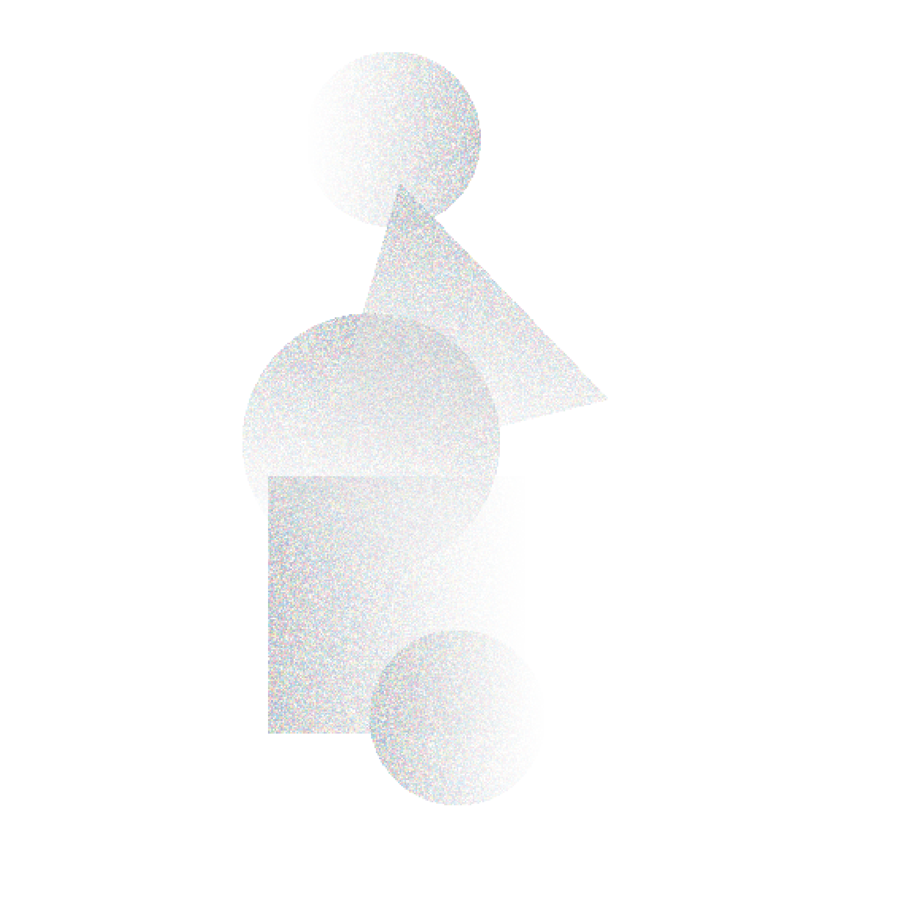

En 2023 afianzamos nuestro compromiso por promover una educación integral y de calidad; procesos que contribuyen al desarrollo de capacidades en los maestros, estudiantes y familias, fortaleciendo habilidades del ser y el hacer. Abordamos iniciativas centradas en la formación docente, el desarrollo de competencias digitales y la equidad de género. Además, trabajamos por la promoción del arte y la cultura convencidos de que es un camino de transformación constante que da sentido de unidad y pertenencia en las comunidades.
INICIATIVAS QUE APOYAMOS

ENSEÑA POR MÉXICO/ TEACH FOR ALL
En alianza con la institución Enseña por México (ExM) trabajamos para reducir la inequidad educativa para que niñas, niños y jóvenes con mucho talento, pero con recursos limitados, alcancen su máximo potencial a lo largo de su vida.
PROGRAMA CUANTRIX
Es una iniciativa que busca generar equidad de oportunidades a través de las Ciencias de la Computación y el aprendizaje de la programación. Este programa se ejecuta en alianza con Fundación Televisa y gobiernos estatales para beneficiar a alumnos de nivel secundaria.

PROGRAMA TECNOLOCHICAS
Su objetivo es inspirar, desarrollar habilidades y crear oportunidades para que más niñas y jóvenes mexicanas elijan estudiar carreras STEM (por sus siglas en inglés: ciencia, tecnología, ingeniería y matemáticas). Apoyamos este programa en alianza con Fundación Televisa.
PROGRAMA AFLATOUN-AFLATEEN.
HABILIDADES PARA LA VIDA
Fomentamos la educación social, financiera y desarrollo de proyectos de emprendimiento a través de la metodología Aflatoun. En alianza con la organización Observa, formamos a docentes para que repliquen el programa con sus alumnos
CHRISTEL HOUSE. PROGRAMA DE INGLÉS Y MATEMÁTICAS
Apoyamos a esta institución dedicada a impartir educación de calidad a niños, niñas y jóvenes de comunidades marginadas ubicadas en la Ciudad de México y en la periferia. Apoyamos a Christel House para adquir licencias digitales de matemáticas e inglés.
PROGRAMA DE FORMACIÓN Y DESARROLLO PARA PERSONAL DOCENTE
En alianza con Fundación Monte de Piedad y Proeducación apoyamos la formación, actualización profesional y pedagógica de profesores y directivos en el desarrollo de habilidades curriculares y de liderazgo participativo, que les permitirán impartir una educación de calidad a los alumnos de primaria.
CAMPUS VIRTUAL PARA DOCENTES
En alianza con Fundación Becar apoyamos la formación de docentes en los ámbitos: educación emocional, gestión escolar, metodologías de evaluación, tecnologías educativas exponenciales, apps, recursos y herramientas tecnológicas.

PLATAFORMAS DIGITALES
En alianza con Fundación Becar otorgamos un donativo para adquirir plataformas virtuales de matemáticas y lectura con el fin de que estudiantes de colegios de 8 estados del país que cursan primaria alta, secundaria y preparatoria mejoren sus competencias en estas materias.
CASA DE LA AMISTAD PARA NIÑOS CON CÁNCER, I.A.P.
Apoyamos a esta institución en programas para la formación de su personal educativo y administrativo, así como a niños y niñas. La formación incluye diversos temas, entre ellos: enseñanza de matemáticas, educación socioemocional y técnicas especializadas en terapia y cuidados paliativos.
ALL HANDS AND HEARTS
En alianza con esta organización mejoramos la infraestructura física educativa. En 2023 apoyamos la reconstrucción del Jardín de Niños “José Martín” ubicado en Barrio Nuevo, Municipio Toltepec, Oaxaca. Esta comunidad estaba en situación de vulnerabilidad por los daños que dejó un sismo en años anteriores.
INICIATIVAS QUE APOYAMOS
DESCUBRIENDO JUNTOS EL ARTE
Apoyamos al Centro Cultural Arocena, ubicado en el estado de Coahuila, para impartir formación a docentes y alumnos en temas museales con aplicación directa al currículo escolar. El objetivo es fomentar y acercar el arte y la cultura a docentes y estudiantes de esa región.

CULTURA QUE TRANSFORMA: ORQUESTAS INFANTILES
Apoyamos los proyectos musicales de orquestas de Nuevo León y Oaxaca. Además del desarrollo de talentos artísticos, las orquestas infantiles promueven el desarrollo socioemocional y reducen el riesgo de situación de calle.
CULTURA QUE TRANSFORMA: ARTES PLÁSTICAS PARA TODOS.
Apoyamos los talleres de artes plásticas realizados en colaboración con Puerta Abierta I.A.P y Apoyo Infantil Guanajuato A.C. Estas iniciativas, a través de las artes plásticas, promueven entre los niños, niñas y jóvenes una cultura de paz y conocimiento de los derechos humanos. Esto contribuirá a que vivan una vida libre de violencia.
SUMANDO VOLUNTADES
En México nos sumamos a esta iniciativa regional que moviliza el talento, tiempo y conocimiento de los colaboradores de SURA. Los voluntarios mexicanos trabajaron para mejorar el Área Natural Protegida de Xochimilco a través de diversas actividades.
PINTAR, APRENDER, AYUDAR
En alianza con World Vision, colaboradores e invitados trabajamos juntos para remodelar las áreas lúdicas y recreativas de la Primaria Emiliano Zapata, ubicada en la comunidad indígena mazahua, Llano Grande, Jaltepec, Estado de México.
UN DÍA EN CHRISTEL HOUSE
En colaboración con Christel House, nuestros colaboradores e invitados participaron en la constr Después de tres años sin actividad presencial debido a la pandemia, regresamos a esta escuela. El viernes 01 de diciembre realizamos diferentes actividades lúdicas con los alumnos enfocadas en el cuidado del medio ambiente y la gratitud hacia los demás.
SURA SCHOOL
En 2023 continuamos con la ejecución de SURA School, un programa de mentoring virtual en el que colaboradores de SURA intercambiaron correos con alumnos de 3° de secundaria de la escuela Christel House para ayudarles a mejorar sus habilidades en inglés escrito.

PATROCINA UNA HISTORIA
Apoyamos a la organización humanitaria global World Vision en el desarrollo de programas para apoyar a niños, niñas y jóvenes de comunidades rurales de forma integral. En 2023 apoyamos a la niñez de una comunidad indígena mazahua del Estado de México, quienes con sus familias acceden a programas de impacto comunitario en las áreas de salud, nutrición, educación, crianza con amor y derechos humanos.
EMERGENCIA. SISMO EN TURQUÍA Y SIRIA
A través de nuestro aliado World Vision brindamos apoyo a los damnificados por el sismo de febrero de 2023 en Siria y Turquía. Se distribuyeron alimentos, agua, insumos de higiene y médicos, entre otros apoyos.
EMERGENCIA. HURACÁN OTIS
El 25 de octubre de 2023 el huracán Otis impactó la ciudad de Acapulco y zonas aledañas de Guerrero. En alianza con World Vision distribuimos kits de alimentos y apoyamos la reconstrucción y rehabilitación de espacios amigables para niños, niñas y adolescentes.
La información incluida en este capítulo está vinculada a los siguientes ODS